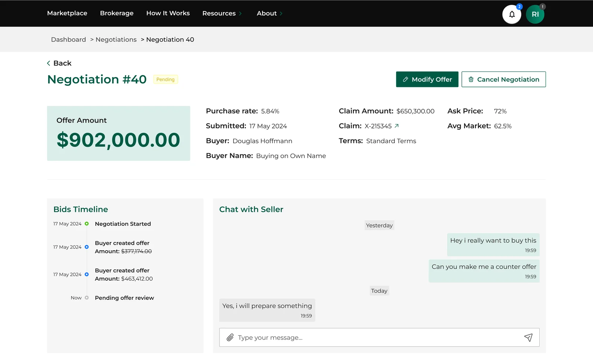
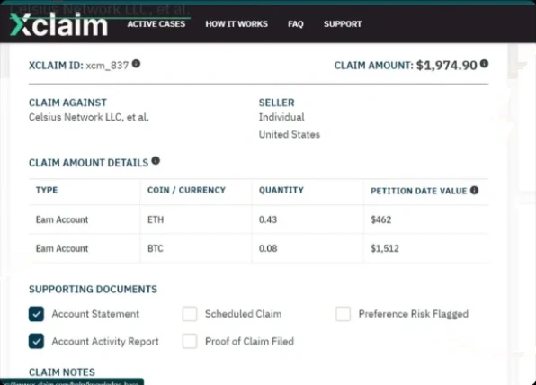
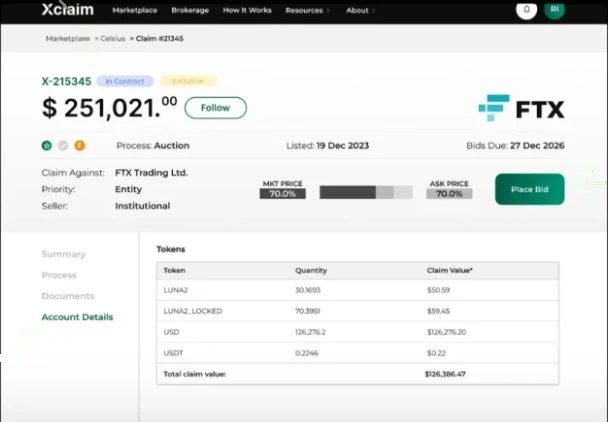
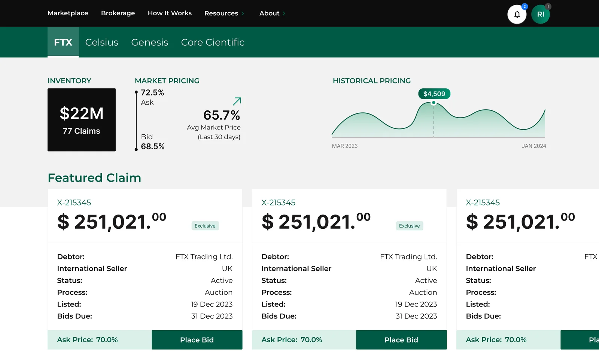
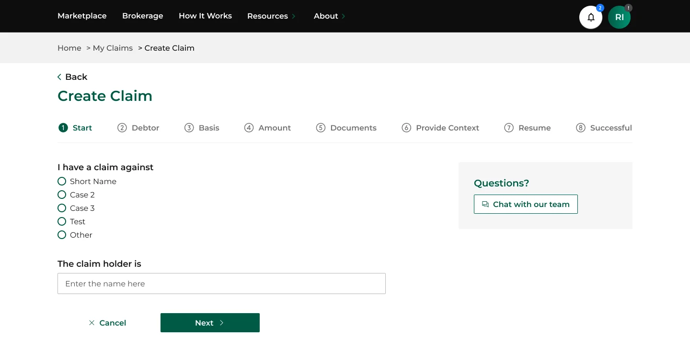
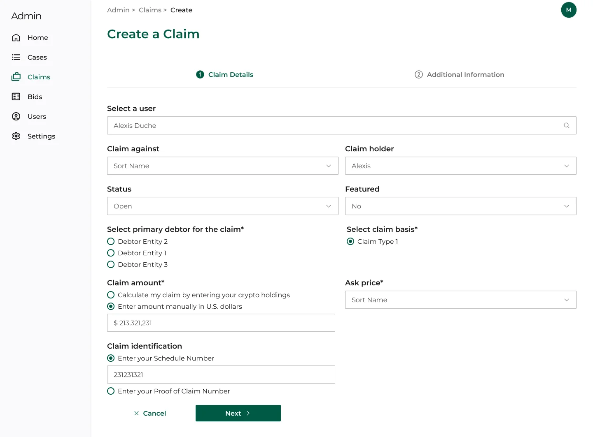

Web · Marketplace redesign · 2023Web · Rediseño de marketplace · 2023
Crypto Marketplace
The redesign of a marketplace for crypto bankruptcy claims, built to help users trade and claim their digital assets with ease. El rediseño de un marketplace de reclamos por quiebras de empresas cripto, pensado para que los usuarios intercambien y reclamen sus activos digitales con facilidad.

- The problemEl problema
- Low transparency, an inconsistent UI, communication scattered outside the platform and high friction were eroding trust and slowing down transactions.Poca transparencia, una interfaz inconsistente, comunicación dispersa fuera de la plataforma y mucha fricción estaban erosionando la confianza y frenando las transacciones.
- What we didQué hicimos
- Together with another UX designer: a 7-week research phase, two personas with opposing needs and four “How might we” questions that guided the redesign for buyers, sellers and admins.Junto con otra diseñadora UX: una fase de investigación de 7 semanas, dos personas con necesidades opuestas y cuatro preguntas “¿Cómo podríamos…?” que guiaron el rediseño para compradores, vendedores y administradores.
- The resultEl resultado
- New dashboards for buyers, sellers and admins, communication moved inside the platform, and transparent claim evaluation backed by historical data.Nuevos dashboards para compradores, vendedores y administradores, la comunicación dentro de la plataforma y una evaluación de reclamos transparente, respaldada por datos históricos.
- RoleRol
- UX Research · UX UI Designer
- TimelineFecha
- May – Aug 2023Mayo – agosto 2023
- ClientCliente
- Good Inc. – X-claim (USA)Good Inc. – X-claim (EE. UU.)
- MethodologyMetodología
- Design Thinking
- ToolsHerramientas
- Figma · Maze · Trello
- TeamEquipo
- Claudia Jiménez & another UX designerClaudia Jiménez y otra diseñadora UX
OverviewResumen
A marketplace for bankruptcy claims that people didn’t fully trustUn marketplace de reclamos por quiebra en el que la gente no terminaba de confiar
X-claim is an online marketplace for buying and selling bankruptcy claims, including claims against crypto estates such as FTX, Celsius, Genesis and Core Scientific. I designed it together with another UX designer (research and screens done jointly), inside a cross-functional team of designers, developers and project managers.X-claim es un marketplace en línea para comprar y vender reclamos por quiebra, incluidos reclamos contra empresas cripto como FTX, Celsius, Genesis y Core Scientific. Lo diseñé junto con otra diseñadora UX (investigación y pantallas en conjunto), dentro de un equipo multidisciplinario de diseñadores, desarrolladores y project managers.
The problems that reduced trust and transaction velocity, and what the redesign deliveredLos problemas que reducían la confianza y la velocidad de las transacciones, y lo que entregó el rediseño
How we workedCómo trabajamos
A user-centered, iterative process, from discovery to deliveryUn proceso centrado en el usuario e iterativo, del descubrimiento a la entrega
- EmpathizeEmpatizarInsights report, benchmarking matrix and opportunity map of the existing productReporte de insights, matriz de benchmarking y mapa de oportunidades del producto existente
- DefineDefinirProject charter, problem statement, success metrics, personas, user journeys, pain point matrix and UX prioritiesProject charter, planteamiento del problema, métricas de éxito, personas, user journeys, matriz de pain points y prioridades de UX
- IdeateIdearConcept sketches, information architecture and prioritized conceptsBocetos de concepto, arquitectura de información y conceptos priorizados
- PrototypePrototiparHigh-fidelity screens, a design system and interactive prototypesPantallas de alta fidelidad, un design system y prototipos interactivos
- Test & deliverTestear y entregarUsability testing, annotated screens and interaction specs for handoff, then iteration toward launchPruebas de usabilidad, pantallas anotadas y especificaciones de interacción para el handoff, y luego iteración hacia el lanzamiento
DiscoveryDescubrimiento
We reframed a business problem as a question about trust and decisionsConvertimos un problema de negocio en una pregunta sobre confianza y decisiones
“How might we enable users to evaluate, communicate and transact claims efficiently and transparently, while reducing dependency on manual intervention?”“¿Cómo podríamos permitir que los usuarios evalúen, comuniquen y negocien reclamos de forma eficiente y transparente, reduciendo la dependencia de la intervención manual?”
ObjectivesObjetivos
ResearchInvestigación
Seven weeks to understand the “why” behind the frictionSiete semanas para entender el “por qué” de la fricción
Seven weeks of quantitative analysis, a heuristic evaluation and direct conversations with users surfaced two kinds of users with opposing needs: creditors who need liquidity, and investors who look for value.Siete semanas de análisis cuantitativo, una evaluación heurística y conversaciones directas con usuarios revelaron dos tipos de usuarios con necesidades opuestas: acreedores que necesitan liquidez e inversionistas que buscan valor.
NeedsNecesita
- A straightforward way to list her claim, without confusing legal termsUna forma simple de publicar su reclamo, sin términos legales confusos
- Confidence that buyers are verified and the transaction is secureLa seguridad de que los compradores están verificados y la transacción es segura
- A central dashboard to see listings, track offers and claim statusUn dashboard central para ver publicaciones, seguir ofertas y el estado del reclamo
FrustrationsFrustraciones
- After submitting a claim she landed on the homepage, with no way to see what happened nextDespués de enviar su reclamo volvía a la home, sin saber qué pasaba después
- Anxiety about fraud and unverified buyersAnsiedad por el fraude y los compradores no verificados
- The real action happened in emails, with no control or recordTodo pasaba por correo, sin control ni registro
LikesValora
- The volume and variety of claimsEl volumen y la variedad de reclamos
- Reviewing and bidding quicklyRevisar y ofertar rápido
- A centralized feedUn feed centralizado
FrustrationsFrustraciones
- Claims lacked critical documentation, forcing external research and guessworkA los reclamos les faltaba documentación clave: tenía que investigar por fuera y adivinar
- No central dashboard to track bids, and no way to bid on several claims at onceSin dashboard para seguir sus ofertas ni forma de ofertar por varios reclamos a la vez
- No visibility into market activity or competing interestSin visibilidad de la actividad del mercado ni del interés de otros compradores
From questions to solutionsDe preguntas a soluciones
Four “How might we” questions, four directions for the redesignCuatro preguntas “¿Cómo podríamos…?”, cuatro direcciones para el rediseño
Before & afterAntes y después
The claim view went from a static record to a place to decideLa vista del reclamo pasó de ser un registro estático a un lugar para decidir


The final screensLas pantallas finales
Market data comes first, so every bid starts informedLos datos del mercado van primero, para que cada oferta parta informada
- A tab per debtorUna pestaña por deudorEach debtor gets its own tabCada deudor tiene su propia pestaña
- Market dataDatos del mercadoInventory available, current ask and bid, 30-day average market price and a historical pricing chartInventario disponible, precios de compra y venta, precio promedio de 30 días y un gráfico histórico
- Featured claim cardsReclamos destacadosDebtor, seller, status, process, dates and ask priceDeudor, vendedor, estado, proceso, fechas y precio
- Place BidOfertarA direct action on every cardUna acción directa en cada tarjeta
The home, from top to bottomLa home, de arriba hacia abajo

NegotiationNegociación
Offer, history and conversation in a single viewOferta, historial y conversación en una sola vista
The negotiation screen (shown at the top of this page) keeps everything a buyer and seller need on one page, so nobody has to jump between sections to follow a deal.La pantalla de negociación (al inicio de esta página) reúne en una sola vista todo lo que necesitan comprador y vendedor, para que nadie tenga que saltar entre secciones para seguir un trato.
Three parts of a single viewTres partes de una sola vista
Creating a claimCrear un reclamo
A long form, broken into clear steps, for users and adminsUn formulario largo, dividido en pasos claros, para usuarios y administradores
Users · 8 steps with a progress stepperUsuarios · 8 pasos con indicador de progreso
A “Questions? Chat with our team” box stays at hand in every stepUn recuadro de “¿Preguntas? Chatea con nuestro equipo” siempre a mano en cada paso
Admins · their own form in the admin panel, to register claims on behalf of usersAdministradores · su propio formulario en el panel, para registrar reclamos en nombre de los usuarios


Next projectSiguiente proyecto
Law Firm WebsiteSitio web legal
Read the case studyLeer el caso de estudio← Previous projectProyecto anterior · All projectsTodos los proyectos
Contact MeContáctame
Let's explore the exciting project you'd like to dive into!¡Hablemos del proyecto que tienes en mente y hagámoslo realidad!